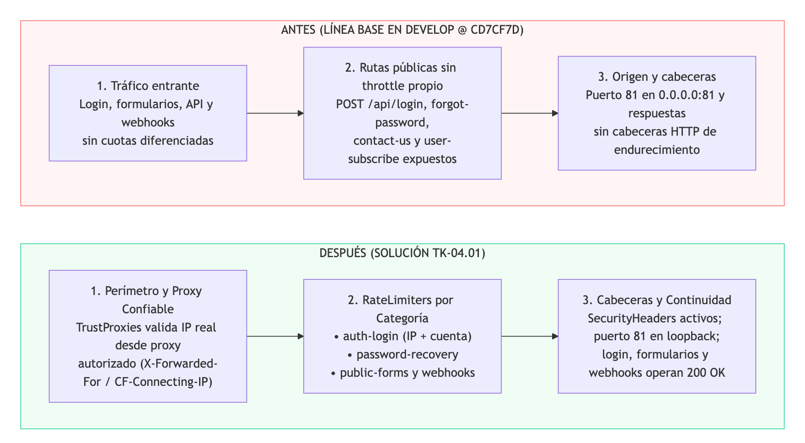
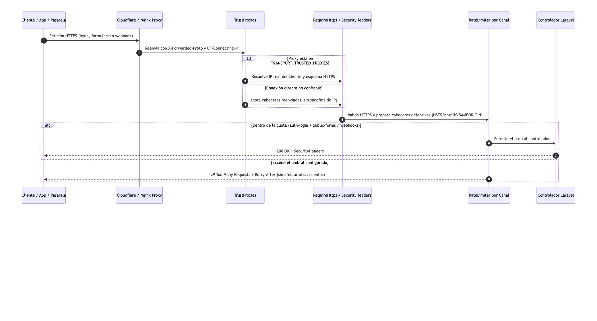
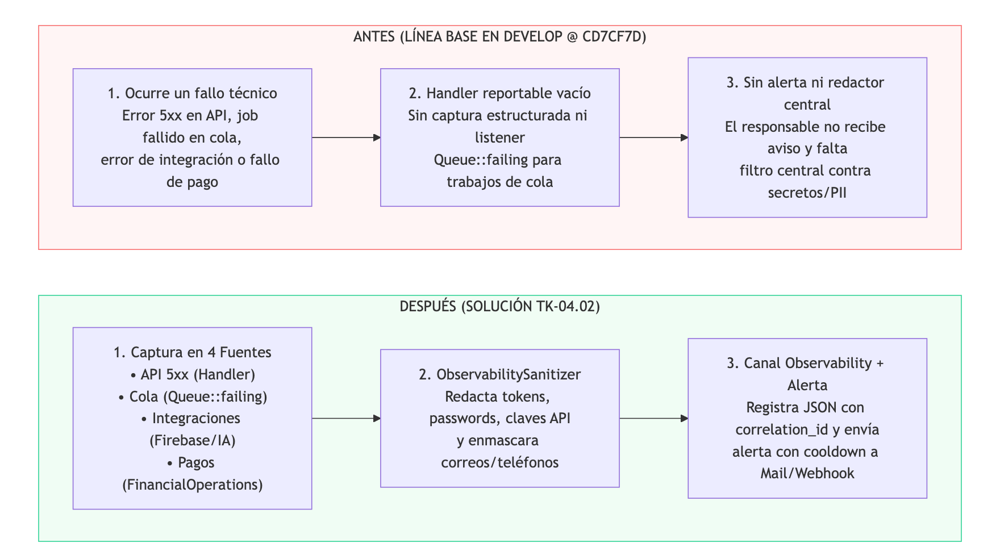
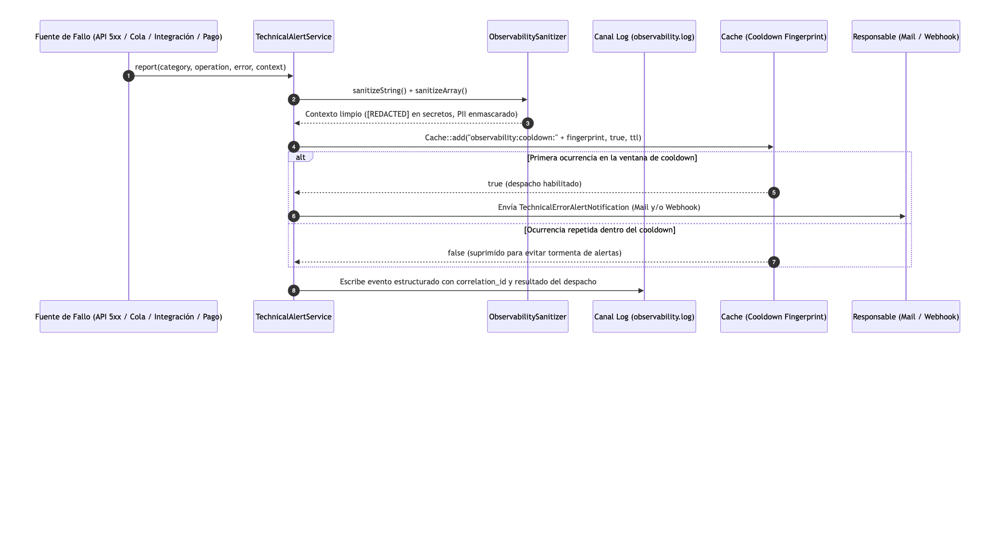

2 / 2 PR
PR #11 y PR #12 fusionados en
develop (25 archivos).
Entrega consolidada de los dos Pull Requests del Ítem 4 integrados en Solutoday/web-v2:
endurecimiento del perímetro HTTP con cuotas diferenciadas por canal, cabeceras defensivas, protección del puerto administrativo en Docker,
plantilla declarativa de Cloudflare WAF y observabilidad centralizada con alertas técnicas saneadas.
develop (25 archivos).develop (commit 974eb02) y verificado en laboratorio aislado con MySQL 8.4.13 y receptores reales SMTP/HTTP.
Las apps móviles (clientes-v2 y proveedor-v2) fueron verificadas como consumidoras y no requieren cambios de código.
El despliegue en servidores y la activación en la consola de Cloudflare corresponden a un ítem posterior de despliegue, fuera del alcance de esta entrega.
api (60 req/min); /api/login, recuperación de clave y formularios públicos carecían de cuota dedicada.TrustProxies no resolvía CF-Connecting-IP detrás de Cloudflare y faltaban cabeceras defensivas (nosniff, SAMEORIGIN, Referrer-Policy, HSTS).ec2/server/config/docker-compose.yml publicaba el panel del proxy (81:81) en todas las interfaces.RateLimiter: auth-login (IP + cuenta normalizada), password-recovery, public-forms y webhooks (alta cuota).TrustProxies + SecurityHeaders: IP real validada solo desde TRANSPORT_TRUSTED_PROXIES y las 4 cabeceras defensivas activas globalmente.127.0.0.1:81:81 en Docker y guía declarativa CLOUDFLARE-WAF-PLANTILLA.md.

nosniff, SAMEORIGIN, Referrer-Policy y HSTS emitidas.CF-Connecting-IP recibió 200.Handler::reportable estaba vacío y no existía listener Queue::failing para trabajos de cola en supervisord.5xx, pagos o proveedores externos (OpenAI, Firebase) no generaban alerta al responsable ni correlation_id.5xx (Handler), Cola (Queue::failing), Integraciones (IA/Firebase) y Pagos (FinancialOperations).ObservabilitySanitizer: reemplaza secretos (Bearer, JWT, password, api_key, chat_gpt_key) por [REDACTED] y enmascara correos/teléfonos.TechnicalAlertService + CLI: canal JSON observability, alertas SMTP/Webhook con cooldown (300 s) y comando observability:test-alert.

ops-alerta@example.test con asunto y correlation_id.chat_gpt_key y api_key ocultos.| PR / Trello | Commits | Control y capacidad entregada | Validación específica |
|---|---|---|---|
| PR #11 ↗ TK-04.01 |
Rama: ca8ee66Merge: 5e3280b |
Extracción confiable de CF-Connecting-IP sin spoofing, 4 cabeceras HTTP defensivas con HSTS, 4 perfiles de límite de tráfico (login, recuperación, formularios y webhooks), cierre del puerto 81 en Docker y plantilla Cloudflare WAF. |
14 pruebas / 81 aserciones (0 fallos) + trazas HTTP en vivo. |
| PR #12 ↗ TK-04.02 |
Rama: 804eb84 / 0040a96Merge: 974eb02 |
Captura centralizada de fallos en 4 fuentes (API 5xx, cola, integraciones IA/Firebase y pagos), canal estructurado con correlation_id, redacción automática de secretos/PII, alertas SMTP/Webhook con cooldown y comando de verificación. |
6 pruebas / 34 aserciones (0 fallos) + entrega real SMTP y Webhook en vivo. |
| Batería / Prueba | Ambiente ejecutado | Resultado | Evidencia |
|---|---|---|---|
| Suite general integrada (Ítems 2 + 3 + 4) | PHP 8.4.27 · PHPUnit 11.5.58 · MySQL 8.4.13 aislado | 160 pruebas / 1,193 aserciones (0 fallos) | regresion-general.junit.xml |
| Suite financiera dedicada | PHP 8.4.27 · PHPUnit 11.5.58 · MySQL 8.4.13 aislado | 8 pruebas / 51 aserciones (0 fallos) | regresion-finanzas.junit.xml |
Trazas HTTP en vivo (TK-04.01) |
Servidor PHP 8.4 local con proxy confiable simulado | 5/5 controles verificados | trazas-http-tk0401.txt |
Entrega SMTP + Webhook (TK-04.02) |
Receptores reales SMTP y HTTP en red aislada | 2 SMTP + 2 Webhooks · 1 suprimido | alerta-en-vivo-smtp-webhook.txt |
| Referencia | Estado | Enlace directo |
|---|---|---|
| PR #11 · TK-04.01 | Fusionado (5e3280b) |
https://github.com/Solutoday/web-v2/pull/11 |
| PR #12 · TK-04.02 | Fusionado (974eb02) |
https://github.com/Solutoday/web-v2/pull/12 |
Commit final integrado (develop) |
Verificado (f9913444) |
https://github.com/Solutoday/web-v2/commit/974eb0269f32e1fb4318fe56e9665aad81ecd8b9 |
| Épica EP-04 en Trello | Validación Solutoday | https://trello.com/c/iAPnTdbS |